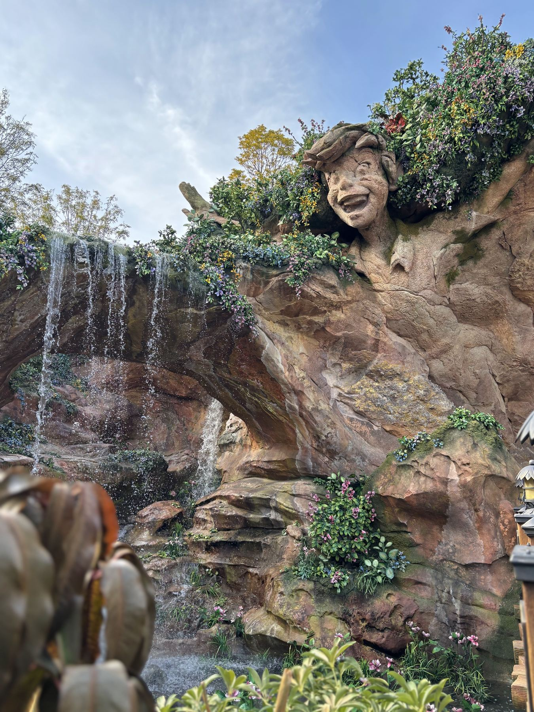

Fantasy Springs — Tokyo DisneySea
みなさんは、ファンタジースプリングスを訪れたとき、エリアのあちこちに刻まれた岩のレリーフに気づいたことはありますか？ アナとエルサ、ラプンツェル、ピーターパンといったキャラクターたちが、まるで古代の壁画のように岩肌や水辺に描かれています。あれは単なる装飾ではなく、このエリア全体の物語を語る「記憶の彫刻」なのです。
公式BGSによれば、昔々この地には水の精霊が住む魔法の泉がありました。泉を揺り籠に美しい庭を育んでいた精霊たちは、ある日好奇心に駆られて世界へと旅立ちます。流れに身を任せて辿り着いた先で、彼女たちはピーターパン、ラプンツェル、アナとエルサの物語に出会い、その感動の記憶を胸に故郷の泉へと戻ってきました。
そして精霊たちは魔法の力を使い、旅で出会った物語の記憶を石・木・水・滝の形に彫り込んで再現したのです。岩に刻まれたロックアートは、精霊たちが遺した感動の「かたち」。泉から流れ出る小川をたどっていけば、いまでもその3つの物語の世界を訪れることができます——これが、ファンタジースプリングス全体を貫くBGSの核心です。
ところで、ファンタジースプリングスがパークの「最奥地」に位置していることに、疑問を感じたことはありますか？ ゲートから最も遠い場所に、なぜ2024年にオープンした新しいエリアが作られたのか。実はここには、ディズニーシー開園当初から伏線として仕込まれていた、壮大な空間コンセプトの答えが隠されているのです。
広大な「海」から始まり、「川」となって山奥へと遡った果てに、すべての水が湧き出る「泉」がある。ゲストは知らず知らずのうちに、水の旅の源流へとたどり着く。
ディズニーシーは「海」をテーマにしたパークですが、そもそもその海の水はどこから来るのでしょう。入口のメディテレーニアンハーバーという「広大な海」から旅を始めたゲストは、ロストリバーデルタという「川」を遡り、やがてその源流——すべての水が湧き出る「泉」にたどり着きます。ファンタジースプリングスが誕生するまで、その問いに答えるエリアは存在しませんでした。
開園から23年。8番目のテーマポートとして最後に加わったこのエリアは、単なる「新エリアの追加」ではありません。ゲストが知らず知らずのうちに水の旅の源流へとたどり着くという、パーク全体に仕込まれたストーリーをついに完成させた、パズルの最後の1ピースなのです。
精霊たちが彫り込んだ3つの物語の扉。それぞれをくぐった先に広がるのは、映画の「エンドロールの後」の世界です。ここでは、知っているキャラクターたちが物語を終えた後の、ごく普通の日常を生きています。その「その後」の空気を感じ取ることこそ、このエリアの最大の楽しみかもしれません。
エルサが魔法をありのままに受け入れ、アレンデールに本当の意味での温かさが戻った「その後」の世界。お城の門はいつでも開かれ、誰でも自由に中に入ることができます。かつて緊張感のあった王宮は、今や村人たちが気軽に集う場所になっています。「オーケンのオーケーフード」を覗いてみてください——映画であれほど慌てていたあのオーケンが、のびのびと屋台を切り盛りしている姿に、きっと思わず笑顔になるはずです。
ラプンツェルが18年間閉じ込められていた塔を見上げながら、「スナグリーダックリング」の扉を開けてみてください。映画であれほど怖かった荒くれ者たちは、夢を叶えた今、それぞれの特技を活かしてこのレストランを切り盛りしています。ピアノを弾く者、パティシエとして腕を振るう者——店内に飾られた無数の小道具や装飾のひとつひとつが、彼らが夢を叶えた証です。見渡すだけで、あの映画の「その後」が見えてきます。
このエリアに足を踏み入れた瞬間、あなたはすでに「ロストキッズ（迷子たち）」の一員です。「ルックアウト・クックアウト」は子供たちが漂流物や難破船の端切れを集めて作り上げた秘密基地のレストラン。脱ぎ散らかされたパジャマ、描きかけの落書き、手作りのおもちゃ——ここには「大人が整えた空間」が一切ありません。子供たちが本当にそこで暮らしているような、あの無邪気な生活感こそがこのエリアの魔法です。
精霊の泉の物語には、もう1人の主人公がいます。旅と冒険をこよなく愛する高貴な女性、「ダッチェス（公爵夫人）」です。
ある日、小川をたどっていたダッチェスは、深い森の奥深くに湧き出る魔法の泉を偶然発見します。精霊たちが岩や水に刻んだ物語の世界を目にした彼女は、その美しさに心を奪われ、その場を離れることができませんでした。やがて彼女は泉のほとりに小さな夏の別荘を建て、この世界を愛する多くの友人たちをもてなしたいという想いから、ついには壮麗な宮殿をこの地に建設したのです。
「ダッチェス（Duchess）」という名はディズニー映画『おしゃれキャット』の白猫と同名だが、ファンタジースプリングスのダッチェスはパークオリジナルの人物設定であり、映画のキャラクターとは無関係。
これが現在の「東京ディズニーシー・ファンタジースプリングスホテル」の始まりです。ホテルに宿泊するゲストは、ダッチェスから招かれた「賓客」として、この魔法の世界に滞在することになります。チェックインの瞬間から、あなたはすでにダッチェスの物語の登場人物なのです。
ファンタジースプリングスを歩いていると、「本当にここに人が暮らしているのでは」と感じる瞬間があります。それは偶然ではありません。ディズニーの空間を作り上げる職人「イマジニア」たちが、このエリアを映画の「セット」ではなく、「歴史の息づいた、本物の街」として設計したからです。
レストランの棚に置かれたコップ、壁のさりげない傷ひとつ、ルックアウト・クックアウトに脱ぎ散らかされた子供たちのパジャマ——これらはすべて、「誰が、なぜここにこれを置いたのか」という物語をイマジニアがゼロから考えて配置したものです。何千ものアイテムのひとつひとつに、手作業でエイジング（古びた加工）が施されています。
岩や滝を彫り上げる「ロックワーク」では、水が流れたときの音やしぶきの飛び方まで年単位で計算されました。そして浦安の現実のビル群をゲストに一切見せないよう、植物の高さ・角度・密度を日本の造園チームと連携して極限まで調整し、「深い森の奥底の泉」という感覚を完成させています。
東京ディズニーシー開園以来最大となる約3,200億円が注ぎ込まれたこのエリアは、数字を超えた「物語を信じさせる技術」の結晶です。次に訪れるときは、ぜひ足元の石ひとつ、棚の小道具ひとつに目を向けてみてください。きっとイマジニアたちが仕込んだ「誰かの物語」が、そこに静かに息づいているはずです。
最終編集日：